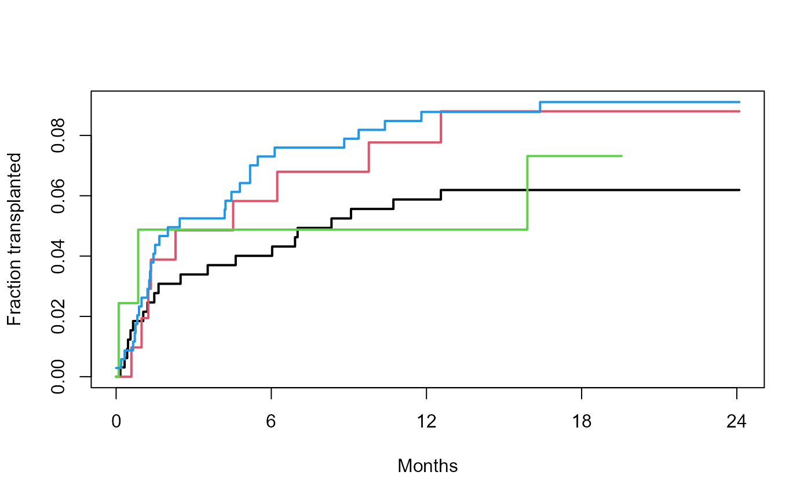

Liver transplant waiting list
transplant.RdSubjects on a liver transplant waiting list from 1990-1999, and their disposition: received a transplant, died while waiting, withdrew from the list, or censored.
Usage
transplant
data(transplant, package="survival")Format
A data frame with 815 (transplant) observations on the following 6 variables.
ageage at addition to the waiting list
sexmorfaboblood type:
A,B,ABorOyearyear in which they entered the waiting list
futimetime from entry to final disposition
eventfinal disposition:
censored,death,ltxorwithdraw
Details
This represents the transplant experience in a particular region, over a time period in which liver transplant became much more widely recognized as a viable treatment modality. The number of liver transplants rises over the period, but the number of subjects added to the liver transplant waiting list grew much faster. Important questions addressed by the data are the change in waiting time, who waits, and whether there was an consequent increase in deaths while on the list.
Blood type is an important consideration. Donor livers from subjects with blood type O can be used by patients with A, B, AB or 0 blood types, whereas an AB liver can only be used by an AB recipient. Thus type O subjects on the waiting list are at a disadvantage, since the pool of competitors is larger for type O donor livers.
This data is of historical interest and provides a useful example of competing risks, but it has little relevance to current practice. Liver allocation policies have evolved and now depend directly on each individual patient's risk and need, assessments of which are regularly updated while a patient is on the waiting list. The overall organ shortage remains acute, however.
The transplant data set was a version used early in the analysis,
transplant2 has several additions and corrections, and
was the final data set and matches the paper.
References
Kim WR, Therneau TM, Benson JT, Kremers WK, Rosen CB, Gores GJ, Dickson ER. Deaths on the liver transplant waiting list: An analysis of competing risks. Hepatology 2006 Feb; 43(2):345-51.
Examples
#since event is a factor, survfit creates competing risk curves
pfit <- survfit(Surv(futime, event) ~ abo, transplant)
pfit[,2] #time to liver transplant, by blood type
#> Call: survfit(formula = Surv(futime, event) ~ abo, data = transplant)
#>
#> n nevent rmean*
#> abo=A, death 325 21 164.9734
#> abo=B, death 103 10 202.4902
#> abo=AB, death 41 3 137.8293
#> abo=O, death 346 32 182.1075
#> *restricted mean time in state (max time = 2055 )
plot(pfit[,2], mark.time=FALSE, col=1:4, lwd=2, xmax=735,
xscale=30.5, xlab="Months", ylab="Fraction transplanted",
xaxt = 'n')
temp <- c(0, 6, 12, 18, 24)
axis(1, temp*30.5, temp)
legend(450, .35, levels(transplant$abo), lty=1, col=1:4, lwd=2)

# competing risks for type O
plot(pfit[4,], xscale=30.5, xmax=735, col=1:3, lwd=2)
legend(450, .4, c("Death", "Transpant", "Withdrawal"), col=1:3, lwd=2)